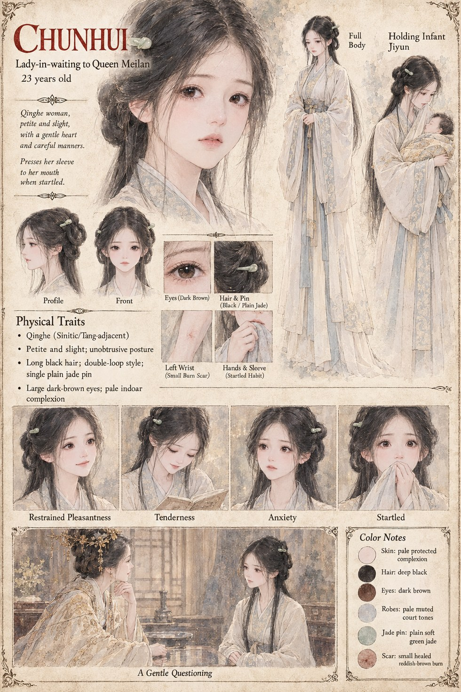

Chunhui
Lady-in-Waiting to Queen Meilan · 23 years old
Lady-in-waiting to Queen Meilan, petite and careful-mannered, with a habit of pressing her own sleeve to her mouth when startled that the household finds endearing rather than telling. Yancheng loves her plainly and patiently, and it is his one offhand mention of water in a finer bottle, repeated to her in confidence, that Meilan draws out of her in a single gentle, unhurried conversation — no threat in it anywhere, and no need for one.
She leaves court service not long after the war, marries a silk merchant who never asks why she flinches at caged birds, and burns every poem she was ever given within the week of hearing he's dead. She regrets the burning, quietly and completely, for the rest of her life, and never once explains to her husband what he was actually apologizing for when he offered to buy her a replacement.
“She burned his poems within the week, and regretted it, quietly, for the rest of her life.”
Appears in The Listening Water